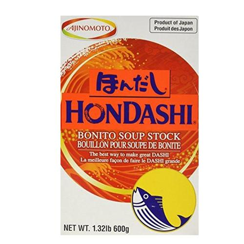
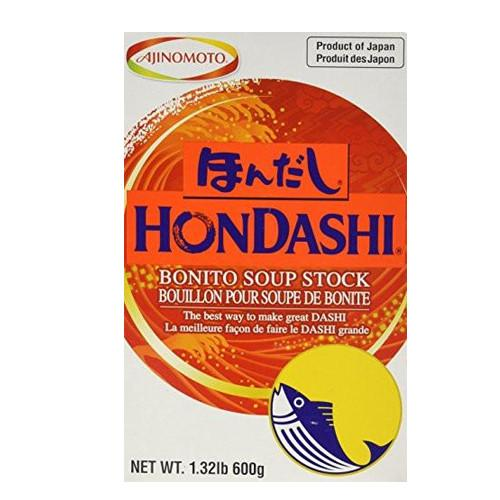
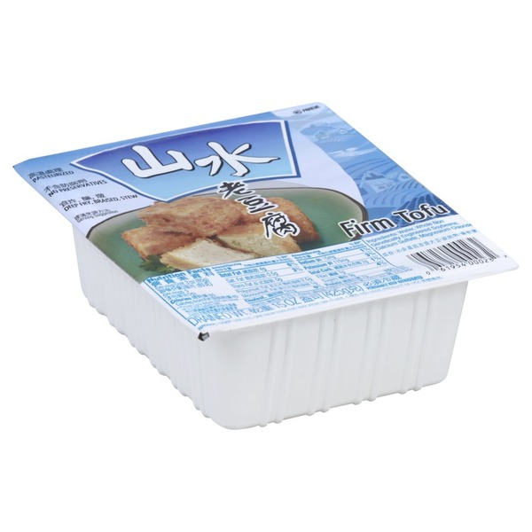

tasty miso
tastier than thou
- very very simple you get your miso (i like shiro miso
 , the white stuff, cause it's creamy but you can also use red miso), bonito dashi, heat in a pan with some wakame seaweed
, the white stuff, cause it's creamy but you can also use red miso), bonito dashi, heat in a pan with some wakame seaweed
- good additions: cubes of tofu, sesame oil
 on top, chopped spring onions
on top, chopped spring onions
 and umeboshi
and umeboshi